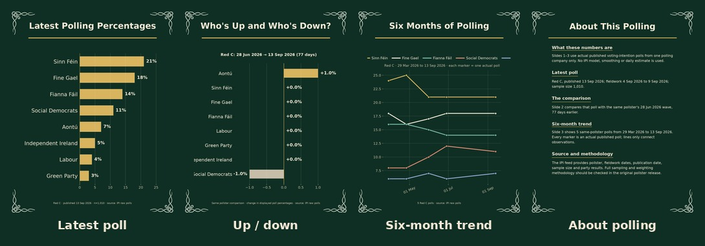

Ipi Polling Factory V1
QA: PASS
Download all slides
Contact sheets

QA checks
| expected_slide_count | PASS | declared 4, actual 4 |
| expected_dimensions | PASS | declared (1080, 1350), contract dimensions (1080, 1350) |
| require_source_footer | PASS | adapter declares source_footer_required=True (pixel presence not independently verified by this checker, matching the current bespoke workflow's coverage) |
Slides
Caption
Six months of Red C polling, using actual published poll results rather than the IPI daily model. Latest poll: 13 Sep 2026, n=1,010. Slide 2 compares it with the same pollster's 28 Jun 2026 wave (77 days earlier). Slide 3 shows all 5 Red C polls from 29 Mar 2026 to 13 Sep 2026 inside the 183-day trend window; every marker is an actual published poll. These are individual survey results, so normal polling uncertainty applies. Full sampling and weighting methodology should be checked in the original pollster release. Source: Irish Polling Indicator (IPI) raw polls https://github.com/Irish-Polling-Indicator/ipi-data